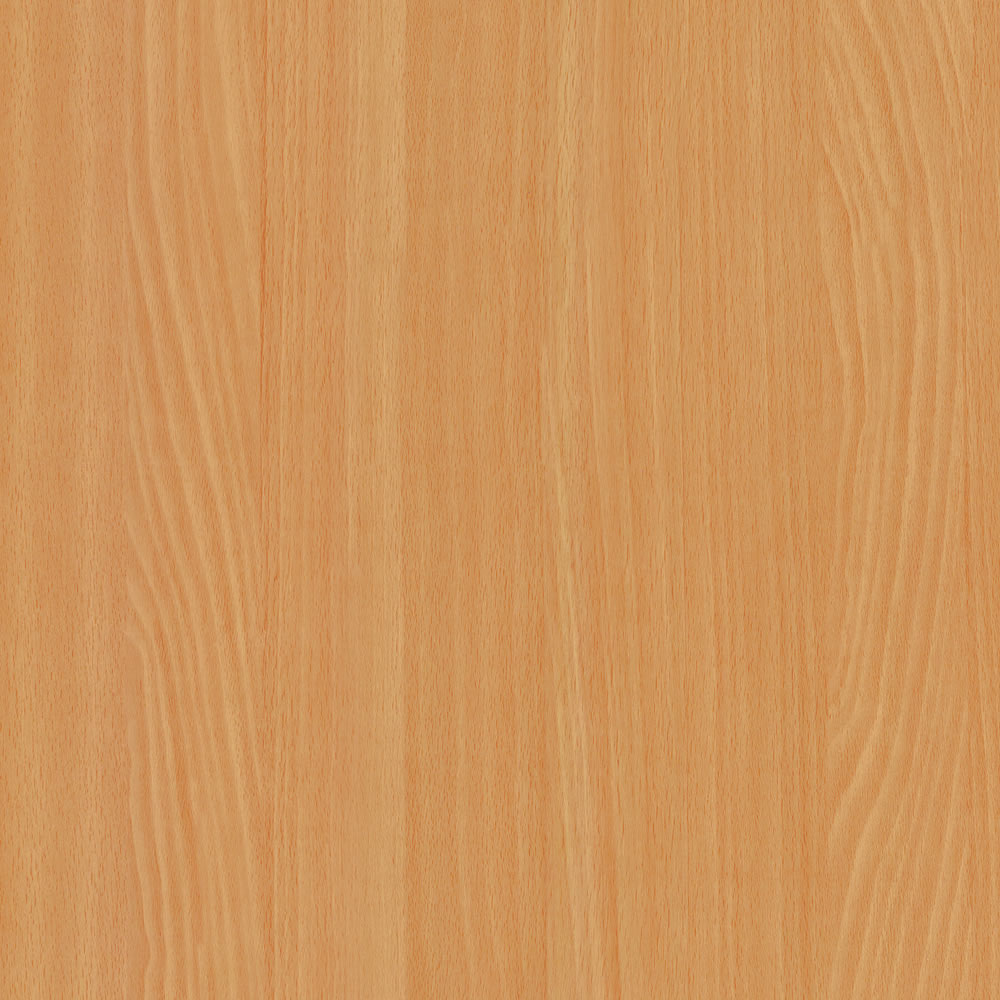
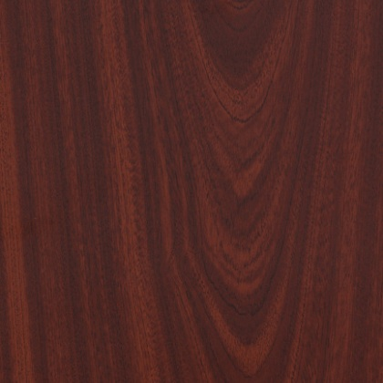

Faanyaggok
Bükk

A bükk sokféleképpen hasznosítható kemény lombos faanyag. Magyarországon elsősorban az európai bükk (Fagus sylvatica) anyaga
20-40m magas egyenes, hengres törzsű fa.Kérge háncsrosttól mentes, sima, szürkészöldes színű.Kéregvastagsága 1-2 cm.
Cseresznye

A cseresznye a rózsafélék (Rosaceae) közé tartozó Prunus nemzetség alnemzetsége. Cseresznye néven leggyakrabban a vadcseresznyefát, illetve annak valamely termesztett változatát, vagy annak csonthéjas gyümölcsét értik.
4-6m magas egyenes, 5-7 m szélleségű a törzse. A cseresznye az összes gyümölcsfaj közül legjobban szenved a talaj levegőtlenségétől.Nagyon alacsony humusztartalmú talajokra nem érdemes cseresznyét telepíteni.
Dió

Közepes, vagy nagy termetű (10–40 m magas) lombhullató fák, 20–90 cm-es, 5-25 levélkéből összetett leveleik páratlanul szárnyaltak, termésük diótermés (csonthéjashoz hasonló, zárt kupacsú makk).
A Kárpát-medencében két fajukkal találkozhatunk gyakrabban, az egyik az ehető diót termő közönséges dió, a másik az Észak-Amerikából származó, Európában parkokban díszfaként ültetett, illetve néhol erdőgazdasági jelentőségű fekete dió
Mahagóni

A mahagóni vagy mahagónifa elnevezést eredetileg a Karib-tenger szigeteiről, Közép-Amerikából származó Swietenia mahagoni lombos fafajra, illetve elsősorban az abból nyert faanyagra használták, később a Swietenia nemzetséghez tartozó egyéb fákat, azok nagyon hasonló faanyagát is így nevezték.
Magassága 20-30m, szélesságe pedig 0,6-1,5m-ig terjedhet
Tölgy

A tölgy vagy tölgyfa a bükkfafélék család nemzetsége mintegy ötszáz fajjal rendelkezik.Kemény lombos faanyag, Magyarországon elsősorban a kocsányos tölgy illetve a kocsánytalan tölgy anyagát hasznosítják. A csertölgy faanyaga cser név alatt szerepel.
15-25m között terjedhet a magassága, szélessége pedig 1-2,5 m között.
Kézi szerszámok
Oldalunkon jó néhány kézi szerszámot elérhetőségét is megtalálhatják, és erre a linkre kattintva elérhetik: